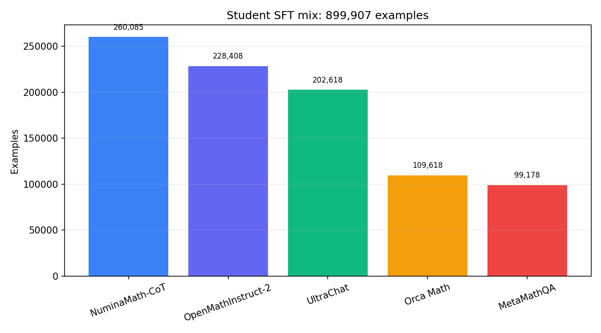

A pretrained model has learned to continue text. That is impressive, but “continue whatever came before” is not the same job as “understand my request, answer helpfully, and stop at the right moment.” If a webpage contains a question followed by three wrong forum replies, continuation training is perfectly happy to imitate the forum. Helpful assistants need a more specific target.
Fine-tuning reshapes a pretrained model for that target without starting over. SFT, GRPO/RLVR, and RLHF are different sources of feedback. SFT says, “Here is a response worth imitating.” RLVR says, “Try several answers; this verifier can tell which result is correct.” RLHF says, “Humans prefer this response to that one.”
It is useful to separate three objects. A policy is the same language model distribution used throughout the article, written \(p_\theta(y\mid x)\), where \(x\) is the prompt or prefix and \(y\) is the generated response sequence. A reward is a scalar signal saying whether a completion is desirable. An optimization method is the rule used to update \(\theta\). Much confusion comes from mixing these levels, as if SFT, RLHF, PPO, and DPO were all the same kind of thing. They are not.
| Term | Full name | Role | Brief description |
|---|---|---|---|
| SFT | Supervised Fine-Tuning | Demonstration learning | Continue next-token training on curated prompt-response examples, usually masking the prompt so only assistant tokens contribute to the loss. This teaches the model the response format and behavior to imitate. |
| RLHF | Reinforcement Learning from Human Feedback | Preference-based fine-tuning framework | Uses human comparisons such as “answer A is better than answer B” to define what the model should prefer. Classical RLHF trains a reward model from comparisons, then optimizes the policy against that learned reward while constraining drift from a reference model. |
| RLVR | Reinforcement Learning with Verifiable Rewards | Verifier-based fine-tuning framework | Uses an automatically checkable reward instead of subjective human preference. For math, code, or symbolic tasks, the reward may come from exact answer matching, unit tests, theorem checkers, or rule-based graders. |
| PPO | Proximal Policy Optimization | Policy optimization algorithm | An RL update rule that improves expected reward while clipping large policy-ratio changes. In LLM fine-tuning, PPO is commonly paired with a KL penalty so the updated policy does not sprint away from the reference model like a caffeinated undergraduate after deadline night. |
| DPO | Direct Preference Optimization | Preference optimization algorithm | Optimizes chosen/rejected response pairs directly, without training a separate reward model and without running a full online RL loop. It can be read as a logistic classification objective on policy log-ratio differences relative to a reference policy. |
| GRPO | Group Relative Policy Optimization | Policy optimization algorithm | Samples several completions for the same prompt, scores them, and uses within-group relative advantages. This is attractive for RLVR because a verifier can score many candidate solutions and the update can compare them prompt-locally. |
| Reward model | Learned scalar preference model | Reward estimator | A separate model \(R_\phi(x,y)\) trained to predict human preferences. It turns pairwise judgments into a scalar reward, but the policy can exploit its errors if optimization is too aggressive. |
| KL penalty | Kullback-Leibler regularization | Reference constraint | A term such as \(D_{\mathrm{KL}}(p_\theta(\cdot\mid x)\Vert p_{\mathrm{ref}}(\cdot\mid x))\) that discourages the tuned model from drifting too far from the pretrained or SFT reference policy. |
SFT is the clearest place to begin: provide a user question and a high-quality assistant answer, then continue next-token training only on the assistant portion. The model is shown the behavior we want it to imitate.
For the SFT run, we form a mix of 899,907 examples: 260,085 NuminaMath-CoT, 228,408 OpenMathInstruct-2, 202,618 UltraChat, 109,618 Orca Math, and 99,178 MetaMathQA. The split contains 891,122 train examples and 8,785 validation examples, totaling 403,406,096 formatted tokens with maximum length 4,096. The chat identity is MyLLM, a math and English tutor for students, with assistant-only loss.

Figure 1. Source composition of the 899,907-example SFT mixture, combining math reasoning with general chat behavior.
The sequence is bos and system role, system instruction, end and user role, question, end and assistant role, answer, then end and eos. Only assistant tokens contribute to loss: masking the prompt prevents the model from being rewarded for parroting the question. Answers finish in a boxed form so their terminal result is easy to locate.
Let a formatted example be \(x_{1:T}\), and let \(m_t=1\) only when target \(x_{t+1}\) belongs to the assistant response. The SFT objective is
\[\mathcal L_{\mathrm{SFT}}(\theta)=-\frac{1}{\sum_t m_t}\sum_{t=1}^{T-1}m_t\log p_\theta(x_{t+1}\mid x_{1:t}).\]
System and user tokens remain in the conditioning prefix, so they influence every assistant prediction, but their own next-token errors do not contribute to the objective. This separates conditioning information from supervised output. Without the mask, the model spends optimization capacity reconstructing prompts that will already be supplied at inference time.
If source \(s\) contributes distribution \(\widehat{\mathcal D}_s\) with sampling weight \(w_s\), then the effective training risk is
\[\widehat R_{\mathrm{SFT}}(\theta)=\sum_s w_s\,\mathbb E_{x\sim\widehat{\mathcal D}_s}[\mathcal L_{\mathrm{SFT}}(x;\theta)],\qquad \sum_s w_s=1.\]
Raw source counts implicitly determine \(w_s\) under uniform example sampling. Explicit reweighting changes the optimized distribution even if the underlying examples are unchanged.
RLVR optimizes correctness that a verifier can check, rather than resemblance to a reference solution. For each prompt, sample a group of \(n_{\mathrm{grp}}\) completions and assign \(R_i=1\) when the final answer is correct and \(0\) otherwise. The relative advantage is
\[A_i=\frac{R_i-\mu_R}{\sigma_R+\varepsilon_R}.\]
For example, we can limit each policy-ratio update to \(1\pm0.2\) and apply a per-token KL penalty to discourage drift from a frozen reference. Sparse binary reward needs a capable starting policy: if every completion fails, all within-group advantages carry essentially no directional signal.
For prompt \(x\), sample \(y_i\sim p_{\mathrm{old}}(\cdot\mid x)\) for \(i=1,\ldots,n_{\mathrm{grp}}\). Define
\[\mu_R=\frac{1}{n_{\mathrm{grp}}}\sum_i R_i,\qquad \sigma_R^2=\frac{1}{n_{\mathrm{grp}}}\sum_i(R_i-\mu_R)^2.\]
Subtracting \(\mu_R\) provides a prompt-local baseline. It preserves the expected policy-gradient direction while reducing variance. Dividing by \(\sigma_R+\varepsilon_R\) normalizes reward scale across prompts. If every completion receives the same reward, then \(A_i=0\) for all \(i\); that prompt supplies no relative learning signal.
For completion token \(y_{i,t}\), define the importance ratio
\[\rho_{i,t}(\theta)=\frac{p_\theta(y_{i,t}\mid x,y_{i,<t})}{p_{\mathrm{old}}(y_{i,t}\mid x,y_{i,<t})}.\]
A GRPO-style objective maximizes
\[\mathcal J_{\mathrm{GRPO}}(\theta)=\frac{1}{n_{\mathrm{grp}}}\sum_i\frac{1}{|y_i|}\sum_t\min\!\left(\rho_{i,t}A_i,\operatorname{clip}(\rho_{i,t},1-\epsilon_{\mathrm{clip}},1+\epsilon_{\mathrm{clip}})A_i\right)-\lambda_{\mathrm{KL}}D_{\mathrm{KL}}(p_\theta(\cdot\mid x)\Vert p_{\mathrm{ref}}(\cdot\mid x)).\]
Clipping limits the incentive for a single batch to move the policy far from the sampling policy. The KL term limits drift from the frozen reference. With \(\epsilon_{\mathrm{clip}}=0.2\) and \(\lambda_{\mathrm{KL}}=0.05\), the two controls address different failure modes: stale-sample instability and global policy drift.
Classical RLHF learns a scalar preference reward and optimizes it with PPO. DPO instead learns directly from chosen/rejected preference pairs. Its sketch is
\[\mathcal L_{\mathrm{DPO}}=-\log\sigma\!\left(\beta_{\mathrm{DPO}}\left[\log\frac{p_\theta(y^+\mid x)}{p_{\mathrm{ref}}(y^+\mid x)}-\log\frac{p_\theta(y^-\mid x)}{p_{\mathrm{ref}}(y^-\mid x)}\right]\right).\]
Given prompt \(x\), preferred response \(y^+\), and rejected response \(y^-\), a Bradley-Terry reward model assumes
\[\Pr(y^+\succ y^-\mid x)=\sigma\!\left(R_\phi(x,y^+)-R_\phi(x,y^-)\right).\]
The reward model minimizes pairwise logistic loss. A policy optimizer then approximately maximizes expected learned reward subject to a reference-policy constraint:
\[\max_\theta\;\mathbb E_{x,y\sim p_\theta}[R_\phi(x,y)]-\lambda D_{\mathrm{KL}}(p_\theta(\cdot\mid x)\Vert p_{\mathrm{ref}}(\cdot\mid x)).\]
This separates preference estimation from policy optimization, but errors in \(R_\phi\) can be exploited by the policy, a phenomenon often called reward hacking.
DPO removes the explicit learned reward and compares policy log-ratios directly. For one pair, define
\[\Delta_\theta=\log p_\theta(y^+\mid x)-\log p_\theta(y^-\mid x),\qquad \Delta_{\mathrm{ref}}=\log p_{\mathrm{ref}}(y^+\mid x)-\log p_{\mathrm{ref}}(y^-\mid x).\]
Then
\[\mathcal L_{\mathrm{DPO}}=-\log\sigma\!\left(\beta_{\mathrm{DPO}}(\Delta_\theta-\Delta_{\mathrm{ref}})\right).\]
The reference term prevents the objective from rewarding arbitrary probability shifts already present in the base model. The coefficient \(\beta_{\mathrm{DPO}}\) controls the scale of deviation from that reference.
| Stage | Optimizes |
|---|---|
| SFT | Likelihood of curated assistant responses. |
| RLVR | Verifier-checked outcome correctness relative to sampled peers. |
| RLHF / DPO | Human preferences, through a learned reward or direct pairwise objective. |